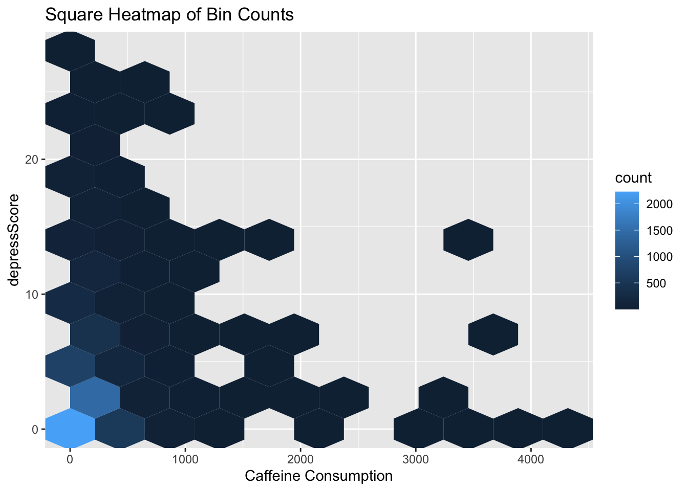

First, let’s look at how much caffeine people in the study drink each day, measured in milligrams. We’ve split the chart into two parts to make it easier to see what’s going on. In the first chart, most people fall into the 200 to 400 milligram range. Then, the numbers spread out more evenly up to 600 milligrams. It’s important to note that the two charts use different scales on the vertical axis, which helps us understand both the lower and higher caffeine consumption levels. The lower levels have more people, while the higher levels have fewer. Also, in the first chart, the bars are all next to each other without any gaps, showing a continuous range of caffeine amounts. In the second chart, there are some gaps between the bars. This tells us that most people in the study have a caffeine intake of 200 to 800 milligrams a day, but a smaller group consumes a lot more, between 1000 to 4000 milligrams.
3.2 Investigating the Main Trend: Diverse Depression Levels Among Low Caffeine Drinkers
Code
ggplot(merged_info) +geom_hex(aes(x = CaffConsump, y = depressScore), bins =10) +labs(title ="Square Heatmap of Bin Counts",x ="Caffeine Consumption",y ="depressScore")

Though a lot of studies has suggested that there is a negative correlation between how much caffeine people drink and their levels of depression, from the chart we looked at, it seems like they don’t have such an association. For the caffeine consumption between 2000-4000 mg, they mostly have low depression scores, but this could be because there aren’t many people in the study who drink that much caffeine. When we look at those who drink less caffeine, which is where most of the study’s data is, the depression scores vary quite a bit. In particular, if you look at the lower left part of the chart, you’ll notice that many people who don’t drink much caffeine also report lower levels of depression.
3.3 Being elder doesn’t lead to higher levels of depression
Now, let’s think about one question. With the increasing of age, will you have more and more things to worry about? People start to consider a lot of problems including income, marriage, and etc. Majority of the people may believe that there is a possible relationship between age and depression level. However, the result of the analysis really surprise everyone. From the above parallel coordinate plot, we can see that the lines are randomly crossing each other. We can hardly observe a clear pattern of positively or negatively correlated lines. Thus, what we see is that age and depression level are not highly correlated.
3.4 An overview for Ratio of Family income to Poverty
Code
ggplot(merged_info, aes(Income)) +geom_histogram(aes(y=after_stat(density)), color ="blue", fill ="cornflowerblue", alpha =0.5) +geom_density(lwd=1.25) +labs(title ="I/P Ratio Distribution",x ="Ratio of family income to poverty", y ="Density") +theme_minimal()
The age factor really gave us an incredible result. How about income? Let’s explore how people’s levels of depression relate to their income ratio. We’ll start by looking at the spread of income ratios in our data.This ratio compares family income to the poverty level, with numbers close to 0 meaning less income and numbers close to 5 meaning more income. We used a type of chart called a density histogram to show this.It turns out that the highest bar on the chart is at an income ratio of 5. This happens because in our data, any income higher than 5 is just marked as 5. If we don’t focus too much on this part, we notice that the chart leans towards the right with a peak around 1. This tells us that a lot of the data is on the lower end of the income scale, indicating lower income levels. The way the chart stretches to the right shows that higher incomes are less common, with most of the data bunching up at the lower end.
3.5 How Money and Mood Connect: A Simple Look
Code
ggplot(merged_info, aes(x=Income, y=depressLevel, fill = depressLevel)) +geom_density_ridges(scale=0.75) +geom_boxplot(width =0.3, alpha =0.7) +theme(legend.position ="none") +labs(title="I/P Ratio horizontal boxplots and ridgeline plots vs. Depression Level",x="I/P Ratio", y ="Depression Level")
After getting a broad overview of how income compares to the poverty line, we’re now zooming in to see how this income ratio varies among people with different levels of depression. We’re using two kinds of charts for this: boxplots and ridgeline plots.
Starting with the boxplots, we notice that people with a remission (low) level of depression show the widest range of incomes. But for those with severe depression, the range of incomes is much narrower. Also, the boxplots tend to lean more towards the right as the depression gets more severe, and they shift towards lower incomes as the depression level increases.
Looking at the ridgeline plots, there’s a clear change in how income is spread out. For lower levels of depression, the spread of income shows two peaks (this is called bimodal). But as depression becomes more severe, the pattern changes to a right-skewed distribution, meaning more people with severe depression have lower incomes.
In conclusion, what we see is that lower income tends to be linked with higher levels of depression. This result is quite making sense. When people have a lower income, they will feel anxious about house, food. They need to work harder to earn money, probably with multiple part-time jobs, so it is normal for them to have a high depression level.
3.6 Diving into Demographics: Race and Gender in Our Survey
Code
library(forcats)ggplot(merged_info, aes(x=fct_infreq(Race), fill = Gender)) +geom_bar() +ylab("Count") +xlab("Race") +ggtitle("Frequency of Race by Gender")
After dealing with income, age, and caffeine consumption factor. The social background for each race is different. Will people in one racial group has more tendency towards one depression level than the other? Let’s check out the race and gender of the people who answered our survey. We grouped races into five categories: White, Black, Hispanic, Asian, and Other. The ‘Other’ category includes people who identify with more than one race. Most of our survey participants are White, followed by Black, then Hispanic, and the smallest group is Asian. We can also note that within each racial group, the number of females and males is pretty much even, almost like a 50-50 split.
3.7 Combining the Views: Race and Gender’s Role in Depression
To investigate the relationship between race, gender, and depression level, we will plot a mosaic graph since they are all categorical variables. Since the proportion ofr moderate, moderately severe and severe is so close, the label is overlapping iwth each other. The order of the label is just from remission to severe. From the above graph, we can see that the proportion of each depression level are similar for different race. What’s more, the total proportion of each depression level for male and female is also similar. Thus, we can hardly tell that there is a clear relationship between gender, race, and depression level.
3.8 Unraveling the Mystery: Age, Money, and Caffeine Consumption’s Role in Depression
Finally, let’s dive into how people’s depression levels are connected to their age, income, and how much caffeine they drink. Put our focus to the top row of the above graph. What we find is that income, especially when compared to the poverty line, has the strongest link to depression scores. This suggests that wealthier people often have lower depression scores. On the other hand, a person’s age and the amount of caffeine they consume don’t seem to have a strong relationship with their depression score.